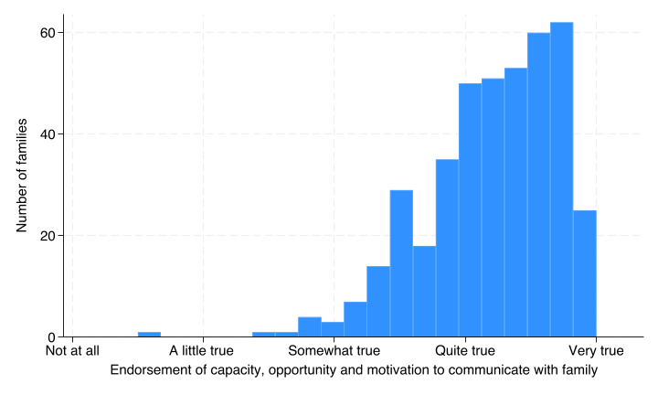
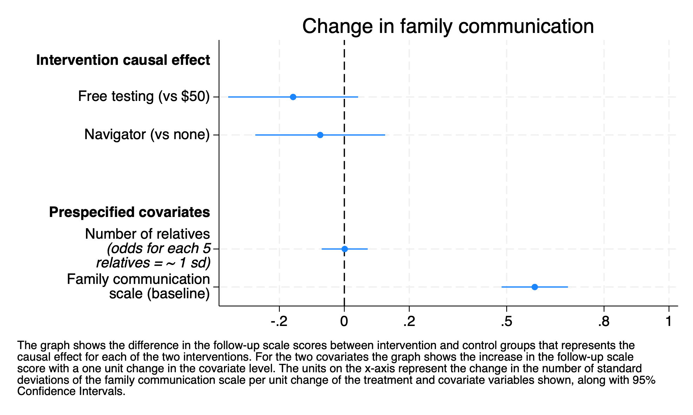

The second pre-specified secondary outcome was change in comfort with family communication as measured by a scale administered to index patients enrolled in the study at baseline and after the intervention.
9.1 Family communication scale (distribution)
Create and describe communication scale
run sub/load_data.do* generate the i2scale without missingvalues and empirical reversalsalpha i2_a-i2_t foreachvarin i2_h i2_p i2_q i2_r i2_s i2_t {quirecode`var' (0 = 4) (1 = 3) (2 = 2) (3 = 1) (4 = 0)} // added to create_var-3quialpha i2_a-i2_t,gen(i2scale_unstd) // added to create_var-4bysort access_code: gen id=_n// added to create_vars-2twowayhist i2scale_unstd if id==1,freq ytitle(Number of families) /// xlab(0 "Not at all" 1 "A little true " 2 "Somewhat true"/// 3 "Quite true" 4 "Very true") xscale(range(0 4.3)) ///xtitle("Endorsement of capacity, opportunity and motivation to communicate with family") ///note(" ""The communication scale is measured only for index patients and the histogram gives the scale""score distribution for those people.")quigraphexport img/fam_comm.png,replace
Test scale = mean(unstandardized items)
Reversed items: i2_h i2_p i2_q i2_r i2_s i2_t
Average interitem covariance: .1931676
Number of items in the scale: 20
Scale reliability coefficient: 0.8123

9.2 Communication outcome regresssion
Family communication was assessed at baseline (as described above) and then again at 6 months for the index patients.
There were 262 index patients who responded to the survey.
Regression results for family communication
code
estuse sub/comm_resultcoefplot, drop(_cons) /// xlab( -.2 0 .2 .5 .8 1.0 ) xline(0) /// coeflabels(1.costarm = "Free testing (vs $50)" 1.navarm="Navigator (vs none)"/// c_relatives=`"Number of relatives {it:(odds for each 5} {it:relatives = ~ 1 sd)}"' /// i2scale_std="Family communication scale (baseline)" /// ,wrap(25)) /// headings(1.costarm="{bf:Intervention causal effect}" /// c_relatives="{bf:Prespecified covariates}") /// title("Change infamily communication") /// note("The graph shows the difference in the follow-up scale scores between intervention and control groups that represents the" /// "causal effect for each of the two interventions. For the two covariates the graph shows the increase in the follow-up scale" /// "score with a one unit change in the covariate level. The units on the x-axis represent the change in the number of standard" /// "deviations of the family communication scale per unit change of the treatment and covariate variables shown, along with 95%" /// "Confidence Intervals.",span)qui graph export "img/comm_results.png",replace

Neither intervention increased comfort with communication at 6 months
As expected, the baseline comfort with family communication was a strong predictor of comfort with communication at 6 months which increased 0.59 standard deviations for every 1 standard deviation in the baseline measurment.
Family size had no association with comfort with communication at 6 months
code
run sub/load_data.dorun sub/create_vars.dorun sub/add_comm_fu.doestimatesuse sub/comm_resultestimatesesample: i2scale_std_fu costarm navarm c_relatives i2scale_std if id==1* combined communication result tablecollect clearcollect _r_b _r_ci,tags(rowheader["Group means cost"]): margins costarm,at(navarm=0)collect _r_b _r_ci,tags(rowheader["Difference (cost)"]): margins r.costarm,at(navarm=0)collect _r_b _r_ci,tags(rowheader["Group means navigator"]): margins navarm,at(costarm=0)collect _r_b _r_ci,tags(rowheader["Difference (navigator)"]): margins r.navarm,at(costarm=0)local fam_num = e(N) // in this case single level regression// Add Number of families row first (before Observations)collect get num_families = `fam_num', tags(row[num_families])collect labellevelsrow num_families "Number of index patients", modifycollect recode result num_families=_r_bcollect style cell row[num_families], nformat(%5.0f)collect style cell, nformat(%5.2f)collect style cell result[_r_ci], sformat("[%s]") cidelimiter(", ")collect style cell result[_r_b], halign(center)collect labellevels colname 1.costarm "Free (no navigator)" 0.costarm "Low-cost (no navigator)" r1vs0.costarm "Free vs low-cost" 1.navarm "Navigator (low-cost)" 0.navarm "No Navigator (low cost)" r1vs0.navarm "Navigator vs none"collect layout (rowheader#colname row) (result[_r_b _r_ci]) collect labellevels result _r_b "Std. devs.",modifycollect previewcollect save sub/table_comm_result,replacecollect export sub/table_comm_result.html,replace
Causal effect of each intervention
This table shows the control and intervention group means for each intervention along with the difference between control and intervention group, both calculated with the other intervention held at the control condition.